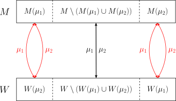

OI Wiki · prijevod · Teorija grafovaOI Wiki · translation · Graph theory
Stabilno sparivanjeStable matching
Sadržaj
Uvod
Problem stabilnog sparivanja (stable matching problem) klasičan je problem kombinatorne optimizacije i kooperativne teorije igara. U odnosu na tradicionalne probleme sparivanja u teoriji grafova, stabilno sparivanje uvodi preferencije pojedinaca i uvjet stabilnosti, pa se dizajn algoritma više oslanja na redoslijed preferencija nego na samu strukturu grafa. U modelu problema stabilnog sparivanja svaki pojedinac ima preferencije prema potencijalnim partnerima, a cilj je među njima uspostaviti stabilno sparivanje. U stabilnom sparivanju ne postoji skupina pojedinaca koja bi se, zato što može dobiti bolji izbor, urotila i odstupila od trenutnog rezultata sparivanja. Stabilno sparivanje i srodni problemi široko se primjenjuju na tržištu rada, pri upisu u škole, raspodjeli medicinskih resursa i sl.
U natjecateljskom programiranju najčešće se pojavljuje stabilno sparivanje jedan-na-jedan na dvostranom tržištu, tj. problem stabilnog braka. Ovaj se članak usredotočuje na problem stabilnog braka i algoritme za njega.
Problem stabilnog braka
Problem stabilnog braka najranije je proučavani problem stabilnog sparivanja. Slično sparivanju u bipartitnom grafu, može se opisati kao problem sparivanja na bračnom tržištu: pretpostavimo da imamo određen broj muškaraca i žena, svaka osoba ima redoslijed preferencija prema suprotnom spolu, a cilj je naći sparivanje u kojem nijedan par muškarca i žene ne bi radije napustio svoje partnere i odabrao jedno drugo.
Opis problema
Tržište sparivanja čini skup muškaraca \(M\) i skup žena \(W\). Svaka osoba ima strogi redoslijed preferencija prema suprotnom spolu:
- za svakog muškarca \(m\in M\) postoji strogi potpuni uređaj \(\preceq_m\) na skupu \(W\cup\{m\}\);
- za svaku ženu \(w\in W\) postoji strogi potpuni uređaj \(\preceq_w\) na skupu \(M\cup\{w\}\).
Osim što međusobno uspoređuje osobe suprotnog spola, svaka osoba u taj redoslijed preferencija uključuje i sebe. To znači da osoba prihvaća samo one osobe suprotnog spola koje preferira više od samaštva; takve osobe zovemo prihvatljivima (acceptable). Očito je redoslijed preferencija među neprihvatljivim osobama nebitan; u načelu je dovoljno zadati redoslijed preferencija samo među prihvatljivim osobama. Zato se preferencije u kojima postoje neprihvatljive osobe zovu i preferencijama s nepotpunim listama (preferences with incomplete lists).
Primjer
Neka je \(m\) muškarac, \(w_1,w_2,w_3\) tri žene i neka vrijedi \(w_1\prec_m m \prec_m w_2\prec_m w_3\). Tada muškarac \(m\) radije ostaje sam nego da bude spojen s \(w_1\); radije je spojen s \(w_2\) nego da ostane sam; radije je spojen s \(w_3\) nego s \(w_2\). Za muškarca \(m\) žena \(w_1\) je neprihvatljiva, a žene \(w_2,w_3\) su prihvatljive.
Sparivanje \(\mu:M\cup W\rightarrow M\cup W\) na tržištu mora zadovoljavati sljedeća svojstva:
- Svaka osoba može biti sparena samo s osobom suprotnog spola ili sa sobom, tj. za sve \(m\in M\) vrijedi \(\mu(m)\in W\cup\{m\}\) i za sve \(w\in W\) vrijedi \(\mu(w)\in M\cup\{w\}\).
- Sparivanje je uzajamno, tj. za sve \(i\in M\cup W\) vrijedi \(i = \mu(\mu(i))\).
U sparivanju \(\mu\) mogu postojati dva izvora nestabilnosti:
- Ako postoji pojedinac \(i\in M\cup W\) takav da je \(\mu(i)\prec_i i\), tj. pojedinac \(i\) radije bi ostao sam nego sa svojim trenutnim partnerom, kažemo da je \(i\) blokirajući pojedinac (blocking individual) sparivanja \(\mu\).
- Ako postoji par \(m\in M\) i \(w\in W\) takav da je \(\mu(m)\prec_m w\) i \(\mu(w)\prec_w m\), tj. muškarac \(m\) i žena \(w\) radije bi bili jedno s drugim nego sa svojim trenutnim partnerima, kažemo da je \((m,w)\) blokirajući par (blocking pair) sparivanja \(\mu\).
Ako sparivanje \(\mu\) nema ni blokirajućih pojedinaca ni blokirajućih parova, kažemo da je sparivanje \(\mu\) stabilno (stable). U stabilnom sparivanju nitko ne može narušiti trenutno stanje: samci ne mogu naći nikoga tko bi htio biti s njima; oni u braku niti žele razvod niti mogu naći nekoga tko bi s njima pobjegao.
Problem stabilnog sparivanja pita: postoji li za svaki zadani skup redoslijeda preferencija stabilno sparivanje? Ako da, kako ga naći?
Gale–Shapleyjev algoritam
Gale i Shapley predložili su 1962. algoritam odgođenog prihvaćanja (deferred acceptance algorithm), koji za svaki zadani skup redoslijeda preferencija nalazi stabilno sparivanje. Stoga stabilno sparivanje uvijek postoji.
Gale–Shapleyjev algoritam ima dvije simetrične inačice: u jednoj prose muškarci, u drugoj žene. Uzmimo za primjer Gale–Shapleyjev algoritam u kojem prose muškarci; tijek je sljedeći:
- Na početku algoritma smatramo da svaka žena drži prosidbu same sebe, a svaki je muškarac označen kao aktivan.
- Aktivni muškarac prosi onu ženu koju najviše voli među prihvatljivima koje još nije prosio; ako takva žena ne postoji, ne čini ništa. Neovisno o tome je li prosio, sve muškarce označimo kao neaktivne.
- Žena koja je primila nove prosidbe uspoređuje ih s prosidbom koju je dotad držala, zadržava samo onu koju najviše voli (moguće i samu sebe) i odbija sve ostale. Odbijene muškarce ponovno označimo kao aktivne.
- Ponavljamo prethodna dva koraka dok više nema aktivnih muškaraca. Tada žene prihvaćaju prosidbe koje trenutno drže. Tako dobiveno sparivanje je stabilno sparivanje.
Budući da svaki muškarac svaku ženu prosi najviše jednom, algoritam sigurno završava u vremenu \(O(|M||W|)\).
Referentna implementacija:
Ogledni zadatak SPOJ STABLEMP - Stable Marriage Problem – referentna implementacija
#include <iostream>
#include <queue>
#include <vector>
// Rješavač problema stabilnog braka.
// Pretpostavljamo stroge preferencije s nepotpunim listama.
struct StableMatching {
int nx, ny;
std::vector<std::vector<int>> pref_x,
pref_y; // Preferencije: draži prvi, samo prihvatljivi.
std::vector<int> match_x, match_y; // Sparivanje: -1 znači nesparen.
StableMatching(int nx, int ny)
: nx(nx),
ny(ny),
pref_x(nx),
pref_y(ny),
match_x(nx, -1),
match_y(ny, -1) {}
// Gale–Shapleyjev algoritam.
// Složenost: O(nx * ny).
void solve() {
// Izračunaj rangove kojima Y rangira X.
std::vector<std::vector<int>> ranks(ny, std::vector<int>(nx));
for (int j = 0; j != ny; ++j) {
for (int i = 0; i != (int)pref_y[j].size(); ++i) {
ranks[j][pref_y[j][i]] = nx - i;
}
}
// Inicijalizacija.
std::vector<int> waitlist(ny); // Rang najbolje prosidbe za j iz Y.
std::vector<int> ids(nx); // Sljedeći j iz Y kojeg će i iz X zaprositi.
std::queue<int> q; // Trenutno aktivni i iz X.
for (int i = 0; i != nx; ++i) q.push(i);
// Petlja.
while (!q.empty()) {
auto i = q.front();
q.pop();
if (ids[i] == (int)pref_x[i].size()) continue; // Lista je iscrpljena.
auto j = pref_x[i][ids[i]++];
if (ranks[j][i] > waitlist[j]) {
if (waitlist[j]) q.push(pref_y[j][nx - waitlist[j]]);
waitlist[j] = ranks[j][i];
} else {
q.push(i);
}
}
// Ispis.
for (int j = 0; j != ny; ++j) {
if (waitlist[j]) {
int i = pref_y[j][nx - waitlist[j]];
match_x[i] = j;
match_y[j] = i;
}
}
}
};
void solve() {
// Unos.
int n;
std::cin >> n;
StableMatching solver(n, n);
for (int j = 0, x; j < n; ++j) {
auto& cur = solver.pref_y[j];
std::cin >> x;
for (int i = 0; i < n; ++i) {
std::cin >> x;
cur.push_back(x - 1);
}
}
for (int i = 0, y; i < n; ++i) {
auto& cur = solver.pref_x[i];
std::cin >> y;
for (int j = 0; j < n; ++j) {
std::cin >> y;
cur.push_back(y - 1);
}
}
// Riješi problem.
solver.solve();
// Ispis.
for (int i = 0; i < n; ++i) {
std::cout << (i + 1) << ' ' << (solver.match_x[i] + 1) << '\n';
}
}
int main() {
std::ios::sync_with_stdio(false), std::cin.tie(nullptr);
int t;
std::cin >> t;
for (; t; --t) {
solve();
}
return 0;
}
Svojstva stabilnog sparivanja
Stabilno sparivanje ima lijepa teorijska svojstva. Prije svega, Gale–Shapleyjev algoritam konstruktivno dokazuje da stabilno sparivanje uvijek postoji.
Teorem 1 (Gale and Shapley, 1962)
Gale–Shapleyjev algoritam daje stabilno sparivanje. Stoga stabilno sparivanje postoji.
Dokaz
Muškarac ne prosi ženu koja mu nije prihvatljiva, a žena odmah odbija prosidbu muškarca koji joj nije prihvatljiv. Stoga su muškarac i žena koji su na kraju spareni sigurno uzajamno prihvatljivi i blokirajući pojedinci ne mogu postojati. Da bismo dokazali da je sparivanje stabilno, dovoljno je pokazati da nema blokirajućih parova.
Pretpostavimo suprotno: neka je \((m,w)\) blokirajući par. Tada je, zbog \(\mu(m)\prec_m w\), muškarac \(m\) sigurno već prosio \(w\). No budući da je žena \(w\) odbila \(m\), sigurno je primila prosidbu muškarca \(m'\) koji joj je draži. Ako je \(m'\neq \mu(w)\), žena \(w\) u odnosu na \(m'\) može samo još više voljeti \(\mu(w)\). Dakle, u odnosu na \(m\), žena \(w\) sigurno više voli svog konačnog partnera \(\mu(w)\). To proturječi tome da je \((m,w)\) blokirajući par. Stoga je sparivanje stabilno.
Korolar
Ako je \(|M|=|W|\) i sve su osobe suprotnog spola prihvatljive, postoji stabilno perfektno sparivanje.
U Gale–Shapleyjevu algoritmu mogu prositi muškarci, a mogu i žene. U općem slučaju te dvije inačice Gale–Shapleyjeva algoritma daju različita stabilna sparivanja. Štoviše, stabilno sparivanje dobiveno Gale–Shapleyjevim algoritmom u kojem prose muškarci najpovoljnije je za muškarce među svim stabilnim sparivanjima, i obratno.
Teorem 2 (Gale and Shapley, 1962)
Neka su \(\mu_M\) i \(\mu_W\) stabilna sparivanja dobivena Gale–Shapleyjevim algoritmom u kojem prose muškarci odnosno žene. Za svako stabilno sparivanje \(\mu\) vrijedi \(\mu(m)\preceq_m\mu_M(m)\) za sve \(m\in M\) i \(\mu(w)\preceq_w\mu_W(w)\) za sve \(w\in W\).
Dokaz
Zbog simetrije dovoljno je dokazati da \(\mu(m)\preceq_m\mu_M(m)\) vrijedi za sve \(m\in M\). Promotrimo opet Gale–Shapleyjev algoritam u kojem prose muškarci i označimo s \(k(m,w)\) krug algoritma u kojem žena \(w\) odbija prosidbu muškarca \(m\). Taj je krug dobro definiran za sve \((m,w)\) za koje je \(\mu_M(m)\prec_m w\).
Pretpostavimo da \(\mu_M\) nije najpovoljnije za sve muškarce, tj. da postoje stabilno sparivanje \(\mu\) i muškarac \(m\in M\) takvi da je \(\mu_M(m)\prec_m\mu(m)\). Budući da je sparivanje \(\mu_M\) stabilno, vrijedi \(m\preceq_m\mu_M(m)\prec_m\mu(m)\), pa je \(\mu(m)\) žena i \(k(m,\mu(m))\) je sigurno dobro definiran. Bez smanjenja općenitosti neka je \(m\) upravo onaj među svim takvim muškarcima za kojeg je \(k(m,\mu(m))\) najmanji. Neka je u tijeku algoritma žena \(w=\mu(m)\), u trenutku kad je odbila muškarca \(m\), držala prosidbu muškarca \(m'\), tj. \(m=\mu(w)\prec_w m'\). Budući da je \(\mu\) stabilno sparivanje, \((m',w)\) ne može biti blokirajući par, a \(\mu(m')\neq w\), pa je \(w\prec_{m'}\mu(m')\). Budući da u Gale–Shapleyjevu algoritmu žena \(w\) ne mora zadržati prosidbu muškarca \(m'\) do kraja, vrijedi \(\mu_M(m')\preceq_{m'}w\prec_{m'}\mu(m')\). Tada je \(k(m',\mu(m'))\) dobro definiran. Štoviše, zbog \(w\prec_{m'}\mu(m')\), žena \(w\) drži prosidbu muškarca \(m'\) tek nakon što je žena \(\mu(m')\) odbila prosidbu muškarca \(m'\), tj. \(k(m',\mu(m')) < k(m,\mu(m))\). To proturječi izboru muškarca \(m\). Dakle, po kontradikciji, \(\mu_M\) je stabilno sparivanje najpovoljnije za sve muškarce.
Tržište sparivanja može imati eksponencijalno mnogo stabilnih sparivanja. Neka je \(\mathcal S\) skup svih stabilnih sparivanja. Na tom skupu možemo definirati dva parcijalna uređaja:
- \(\mu_1\preceq_M\mu_2\) ako i samo ako \(\mu_1(m)\preceq_m\mu_2(m)\) vrijedi za sve \(m\in M\);
- \(\mu_1\preceq_W\mu_2\) ako i samo ako \(\mu_1(w)\preceq_w\mu_2(w)\) vrijedi za sve \(w\in W\).
Ta dva parcijalna uređaja znače da je rezultat sparivanja bolji za sve muškarce odnosno za sve žene. Općenito, dva stabilna sparivanja ne moraju biti usporediva. No svaka dva stabilna sparivanja induciraju dekompoziciju prikazanu na slici, tako da u trima dobivenim dijelovima vrijedi redom \(\mu_1\preceq_M\mu_2\), \(\mu_1=\mu_2\) i \(\mu_2\preceq_M\mu_1\). Uočite da dio s \(\mu_1=\mu_2\), iako nije izravno nacrtan, zapravo uključuje i slučaj sparivanja sa samim sobom (tj. nesparenosti).

Ta se dekompozicija oslanja na sljedeću lemu:
Lema (Knuth, 1976)
Neka su \(\mu_1\) i \(\mu_2\) dva stabilna sparivanja. Neka su \(M(\mu_i)=\{m\in M : \mu_j(m)\prec_m\mu_i(m)\}\) i \(W(\mu_i)=\{w\in W:\mu_j(w)\prec_w\mu_i(w)\}\) skupovi muškaraca odnosno žena koji preferiraju rezultat sparivanja \(\mu_i\), pri čemu je \(i,j=1,2\) i \(i\neq j\). Tada su \(\mu_1\) i \(\mu_2\) obje bijekcije između \(M(\mu_1)\) i \(W(\mu_2)\) te bijekcije između \(M(\mu_2)\) i \(W(\mu_1)\).
Dokaz
Neka je \(m\in M(\mu_1)\). Budući da je \(m\preceq_m \mu_2(m)\prec_m\mu_1(m)\), vrijedi \(\mu_1(m)\in W\). Neka je \(w=\mu_1(m)\). Budući da je \(\mu_2(w)\neq m\), a \(\mu_2(w)\prec_w m\) bi značilo da je \((m,w)\) blokirajući par sparivanja \(\mu_2\), vrijedi \(\mu_1(w)=m\prec_w\mu_2(w)\). Drugim riječima, \(w\in W(\mu_2)\). To pokazuje \(\mu_1(M(\mu_1))\subseteq W(\mu_2)\). Zbog simetrije dobivamo i \(\mu_2(W(\mu_2))\subseteq M(\mu_1)\). Budući da su \(\mu_1\) i \(\mu_2\) injekcije, vrijedi \(|M(\mu_1)|=|W(\mu_2)|\) i oba su preslikavanja surjekcije. To pokazuje da su \(\mu_1\) i \(\mu_2\) bijekcije između \(M(\mu_1)\) i \(W(\mu_2)\). Analogno su obje i bijekcije između \(M(\mu_2)\) i \(W(\mu_1)\).
Ova lema pokazuje da su parcijalno uređeni skupovi \((\mathcal S,\preceq_M)\) i \((\mathcal S,\preceq_W)\) međusobno dualni. Štoviše, pod svakim od tih uređaja skup \(\mathcal S\) čini rešetku. Budući da je \(\mathcal S\) konačan, obje rešetke sigurno imaju najveći i najmanji element. Ta dva ekstremna elementa upravo su stabilna sparivanja dobivena dvjema spomenutim inačicama Gale–Shapleyjeva algoritma.
Teorem 3 (Conway and Knuth, 1976)
Parcijalno uređeni skupovi \((\mathcal S,\preceq_M)\) i \((\mathcal S,\preceq_W)\) međusobno su dualne rešetke. Štoviše, \(\mu_M\) i \(\mu_W\) redom su najveći i najmanji element rešetke \((\mathcal S,\preceq_M)\), odnosno najmanji i najveći element rešetke \((\mathcal S,\preceq_W)\).
Dokaz
Iz leme se lako pokazuje da su dva parcijalno uređena skupa dualna. Ako je \(\mu_1\preceq_M\mu_2\), to znači \(M(\mu_1)=\varnothing\); po lemi je \(W(\mu_2)=\varnothing\), što je upravo \(\mu_2\preceq_W\mu_1\). I obratno. To pokazuje da su međusobno dualni. U kombinaciji s Teoremom 2 dobivamo da su \(\mu_M\) i \(\mu_W\) ekstremni elementi obaju parcijalno uređenih skupova. Preostaje dokazati da su ti parcijalno uređeni skupovi rešetke. Zbog simetrije dovoljno je dokazati da je \((\mathcal S,\preceq_M)\) rešetka. Zbog simetrije operacija infimuma i supremuma dovoljno je dokazati da je supremum dvaju stabilnih sparivanja opet stabilno sparivanje. Formalno, za proizvoljne \(\mu_1,\mu_2\in\mathcal S\) treba dokazati da je sparivanje \(\mu=\mu_1\lor_M\mu_2\) koje za sve \(m\in M\) zadovoljava \(\mu(m)=\mu_1(m)\lor_m\mu_2(m)\) stabilno sparivanje, gdje je \(\lor_m\) operacija supremuma u potpunom uređaju \(\preceq_m\) (tj. ona od dviju koju \(m\) više voli).
Koristimo oznake iz leme. Za \(i\in M(\mu_1)\cup W(\mu_2)\) stavimo \(\mu(i)=\mu_1(i)\); inače \(\mu(i)=\mu_2(i)\). Po lemi, \(\mu_1\) i \(\mu_2\) preslikavaju skup \(M(\mu_1)\cup W(\mu_2)\) na njega samog, pa je \(\mu\) dobro definirano sparivanje. Budući da su \(\mu_1\) i \(\mu_2\) stabilna i nemaju blokirajućih pojedinaca, nema ih ni \(\mu\). Pretpostavimo da je \((m,w)\) blokirajući par sparivanja \(\mu\). Ako je \(m\in M(\mu_1)\), tada je \(\mu_2(m)\prec_m\mu_1(m)=\mu(m)\prec_m w\). Ako je pritom \(w\in W(\mu_2)\), tada je \(\mu_1(w)=\mu(w)\prec_w m\), pa je \((m,w)\) blokirajući par sparivanja \(\mu_1\), kontradikcija; inače je \(w\in W\setminus W(\mu_2)\) i \(\mu_2(w)=\mu(w)\prec_w m\), pa je \((m,w)\) blokirajući par sparivanja \(\mu_2\), također kontradikcija. Slično i slučaj \(m\in M\setminus M(\mu_1)\) vodi samo na kontradikciju. Po kontradikciji, takav blokirajući par ne postoji. Dakle \(\mu_1\lor_M\mu_2\) je stabilno sparivanje. Tvrdnja je dokazana.
Konačno, u svim stabilnim sparivanjima skupovi nesparenih muškaraca i žena su isti.
Teorem 4 (McVitie and Wilson, 1970)
Neka su \(\mu_1\) i \(\mu_2\) dva stabilna sparivanja. Tada \(\mu_1\) i \(\mu_2\) imaju isti skup fiksnih točaka.
Dokaz
Pretpostavimo da postoji \(m\in M\) takav da je \(\mu_1(m)=m\) i \(\mu_2(m)\neq m\) za neke \(\mu_1,\mu_2\in\mathcal S\). Tada je \(m\in M(\mu_2)\). Po lemi je \(m=\mu_1(m)\in W(\mu_1)\), što proturječi \(m\in M\). Dakle takav \(m\in M\) ne postoji. Analogno ne postoji ni takva \(w\in W\). Stoga svaka dva stabilna sparivanja nužno imaju isti skup fiksnih točaka.
Osim svojstava razmotrenih u ovom odjeljku, stabilno sparivanje ima i lijepa strateška svojstva. O tome vidi literaturu na kraju članka.
Srodni problemi
Stabilno sparivanje i slični problemi pojavljuju se i u mnogim drugim situacijama.
Problem upisa na fakultete
Ako u problemu stabilnog braka ublažimo ograničenje sparivanja jedan-na-jedan i dopustimo sparivanje više-na-jedan, dobivamo problem upisa na fakultete (college admissions problem). Tada fakultet može upisati više studenata, dok god ne prelazi upisnu kvotu; no student i dalje može upisati najviše jedan fakultet. Slične situacije pojavljuju se pri zapošljavanju u tvrtkama, primanju liječnika stažista u bolnice i sl.
Za takve probleme Gale–Shapleyjev algoritam i dalje vrijedi. Primjerice, u Gale–Shapleyjevu algoritmu u kojem se studenti prijavljuju, fakultet može održavati listu kandidata (waitlist) duljine najviše jednake kvoti i svaki put kad broj prijava prijeđe kvotu odbiti prijavu najlošijeg studenta. Prethodna rasprava o svojstvima stabilnog sparivanja i dalje vrijedi za ovu situaciju. Posebno, inačica Teorema 4 glasi: u svim stabilnim sparivanjima broj studenata koje fakultet može upisati je isti. To se zove i teorem o seoskim bolnicama (rural hospitals theorem), jer znači da, kako god mijenjali mehanizam sparivanja, dokle god je rezultat stabilan, seoske bolnice koje ne mogu popuniti mjesta za liječnike nikada ih neće popuniti.
Problem stabilnih sustanara
Ako u problemu stabilnog braka ublažimo uvjet da se sparuju samo osobe suprotnog spola, dobivamo problem stabilnih sustanara (stable roommates problem). Tada na početku imamo samo određen broj studenata koje treba spariti u parove sustanara. Za takve probleme stabilno sparivanje ne mora postojati. Irving je 1985. predložio algoritam koji ovaj problem rješava u vremenu \(O(n^2)\).
Problem tržišta stanova
U problemu stabilnog braka dvije skupine pojedinaca imaju preferencije jedna prema drugoj, pa je to problem dvostranog sparivanja. Osim toga, mogu se razmatrati i problemi jednostranog sparivanja. Čest primjer je problem tržišta stanova (housing market problem). Ima \(n\) stanara, svaki posjeduje jedan stan. Svaka osoba ima strogu preferenciju prema svim stanovima. Stanove treba preraspodijeliti stanarima tako da nijedan stanar ne dobije stan lošiji od početnog i da ne postoji skupina stanara bilo koje veličine koja bi međusobnom razmjenom nekretnina postigla zadovoljavajući ishod. Taj se problem rješava algoritmom Top Trading Cycle u vremenu \(O(n^2)\). Takvi se problemi pojavljuju i pri transplantaciji bubrega i sl.
Zadaci
Literatura i napomene
- 什么是算法：如何寻找稳定的婚姻搭配 (Što je algoritam: kako naći stabilne bračne parove) - Matrix67
- Gale–Shapley 算法：在二分图中寻找稳定匹配 (Gale–Shapleyjev algoritam: traženje stabilnog sparivanja u bipartitnom grafu)
- Stable matching problem - Wikipedia
- Lattice of stable matchings - Wikipedia
- Stable roommates problem - Wikipedia
- Top trading cycle - Wikipedia
- Stable matching: Theory, evidence, and practical design - the 2012 Nobel Prize in Economics
- Notes on Matching and Market Design by Xiang Sun
- Gale, David, and Lloyd S. Shapley. "College admissions and the stability of marriage." The American Mathematical Monthly 69, no. 1 (1962): 9-15.
- Irving, Robert W. "An efficient algorithm for the stable roommates problem." Journal of Algorithms 6, no. 4 (1985): 577-595.
- Knuth, Donald Ervin. "Mariages stables et leurs relations avec d'autres problèmes combinatoires." Les Presses de l'Université de Montréal (1976).
- McVitie, David G., and Leslie B. Wilson. "Stable marriage assignment for unequal sets." BIT Numerical Mathematics 10, no. 3 (1970): 295-309.
- Roth, Alvin E., and Marilda Sotomayor. "Two-sided matching." Handbook of game theory with economic applications 1 (1992): 485-541.
- Roth, Alvin E. "Deferred acceptance algorithms: History, theory, practice, and open questions." International Journal of Game Theory 36, no. 3-4 (2008): 537-569.
Contents
Introduction
The stable matching problem is a classical problem in combinatorial optimization and cooperative game theory. Compared with traditional graph matching problems, stable matching introduces individual preferences and a stability requirement, which makes algorithm design rely more on preference orders than on the graph structure alone. In the model of the stable matching problem, every individual has preferences over potential partners, and the goal is to establish a stable matching among them. In a stable matching there is no group of individuals that would collude and deviate from the current matching because they could obtain a better choice. Stable matching and related problems are widely applied in labor markets, school admissions, allocation of medical resources, and so on.
The stable matching problem that appears most often in competitive programming is one-to-one matching in a two-sided market, i.e. the stable marriage problem. This article focuses on the stable marriage problem and its algorithms.
Stable marriage problem
The stable marriage problem is the earliest studied stable matching problem. Similarly to bipartite matching, it can be described as a matching problem in the marriage market: suppose there are some men and women, every person has a preference order over the opposite sex, and the goal is to find a matching such that no man and woman would rather abandon their respective partners and choose each other.
Problem statement
The matching market consists of a set of men \(M\) and a set of women \(W\). Every person has a strict preference order over the opposite sex:
- for every man \(m\in M\) there is a strict total order \(\preceq_m\) on the set \(W\cup\{m\}\);
- for every woman \(w\in W\) there is a strict total order \(\preceq_w\) on the set \(M\cup\{w\}\).
Besides comparing members of the opposite sex with each other, every person also includes themselves in this preference order. This means a person only accepts members of the opposite sex they prefer to being single; these are called acceptable. Clearly the preference order among unacceptable partners is irrelevant; in principle it suffices to give the preference order among acceptable partners only. Hence preferences in which unacceptable partners exist are also called preferences with incomplete lists.
Example
Suppose \(m\) is a man, \(w_1,w_2,w_3\) are three women, and the preference relation \(w_1\prec_m m \prec_m w_2\prec_m w_3\) holds. Then man \(m\) prefers being single to being matched with woman \(w_1\); prefers being matched with woman \(w_2\) to being single; and prefers being matched with woman \(w_3\) to being matched with woman \(w_2\). For man \(m\), woman \(w_1\) is unacceptable, and women \(w_2,w_3\) are acceptable.
A matching \(\mu:M\cup W\rightarrow M\cup W\) in the market must satisfy the following properties:
- Every person is matched only to a member of the opposite sex or to themselves, i.e. for all \(m\in M\) we have \(\mu(m)\in W\cup\{m\}\) and for all \(w\in W\) we have \(\mu(w)\in M\cup\{w\}\).
- Matching is mutual, i.e. for all \(i\in M\cup W\) we have \(i = \mu(\mu(i))\).
A matching \(\mu\) may have two kinds of instability:
- If there is an individual \(i\in M\cup W\) such that \(\mu(i)\prec_i i\), that is, individual \(i\) would rather be single than with their current partner, then \(i\) is called a blocking individual of the matching \(\mu\).
- If there is a pair \(m\in M\) and \(w\in W\) such that \(\mu(m)\prec_m w\) and \(\mu(w)\prec_w m\), that is, man \(m\) and woman \(w\) would rather be with each other than with their current partners, then \((m,w)\) is called a blocking pair of the matching \(\mu\).
If a matching \(\mu\) has neither blocking individuals nor blocking pairs, the matching \(\mu\) is called stable. In a stable matching nobody can break the current situation: single people cannot find anyone willing to be with them; married people neither want to divorce and be single nor can find anyone willing to elope with them.
The stable matching problem asks: for any given set of preference orders, does a stable matching always exist? If so, how can such a stable matching be found?
Gale–Shapley algorithm
In 1962 Gale and Shapley proposed the deferred acceptance algorithm, which finds a stable matching for any given set of preference orders. Hence a stable matching always exists.
The Gale–Shapley algorithm has two symmetric versions, in which the men propose and the women propose, respectively. Taking the men-proposing Gale–Shapley algorithm as an example, the procedure is as follows:
- At the start of the algorithm, every woman is considered to hold a proposal from herself, and every man is marked active.
- An active man proposes to the woman he likes most among the acceptable women he has not yet proposed to; if no such woman exists, nothing needs to be done. Whether or not he proposed, all men are marked inactive.
- A woman who received new proposals compares them with the proposal she held before, keeps only the one she likes most (possibly herself), and rejects all other proposals. The rejected men are marked active again.
- Repeat the previous two steps until there are no active men. At that point the women accept the proposals they currently hold. The resulting matching is a stable matching.
Since every man proposes to every woman at most once, the algorithm is guaranteed to finish in \(O(|M||W|)\) time.
A reference implementation follows:
Template problem SPOJ STABLEMP - Stable Marriage Problem reference implementation
#include <iostream>
#include <queue>
#include <vector>
// Solver for stable marriage problems.
// Assume strict preferences with incomplete lists.
struct StableMatching {
int nx, ny;
std::vector<std::vector<int>> pref_x,
pref_y; // Preferences: preferred first, only acceptable.
std::vector<int> match_x, match_y; // Matching: -1 means unmatched.
StableMatching(int nx, int ny)
: nx(nx),
ny(ny),
pref_x(nx),
pref_y(ny),
match_x(nx, -1),
match_y(ny, -1) {}
// Gale-Shapley algorithm.
// Complexity: O(nx * ny).
void solve() {
// Compute Y's ranks over X.
std::vector<std::vector<int>> ranks(ny, std::vector<int>(nx));
for (int j = 0; j != ny; ++j) {
for (int i = 0; i != (int)pref_y[j].size(); ++i) {
ranks[j][pref_y[j][i]] = nx - i;
}
}
// Initialize.
std::vector<int> waitlist(ny); // Best proposal rank for j in Y.
std::vector<int> ids(nx); // Next j in Y for i in X to propose to.
std::queue<int> q; // Currently active i's in X.
for (int i = 0; i != nx; ++i) q.push(i);
// Loop.
while (!q.empty()) {
auto i = q.front();
q.pop();
if (ids[i] == (int)pref_x[i].size()) continue; // List exhausted.
auto j = pref_x[i][ids[i]++];
if (ranks[j][i] > waitlist[j]) {
if (waitlist[j]) q.push(pref_y[j][nx - waitlist[j]]);
waitlist[j] = ranks[j][i];
} else {
q.push(i);
}
}
// Output.
for (int j = 0; j != ny; ++j) {
if (waitlist[j]) {
int i = pref_y[j][nx - waitlist[j]];
match_x[i] = j;
match_y[j] = i;
}
}
}
};
void solve() {
// Input.
int n;
std::cin >> n;
StableMatching solver(n, n);
for (int j = 0, x; j < n; ++j) {
auto& cur = solver.pref_y[j];
std::cin >> x;
for (int i = 0; i < n; ++i) {
std::cin >> x;
cur.push_back(x - 1);
}
}
for (int i = 0, y; i < n; ++i) {
auto& cur = solver.pref_x[i];
std::cin >> y;
for (int j = 0; j < n; ++j) {
std::cin >> y;
cur.push_back(y - 1);
}
}
// Solve the problem.
solver.solve();
// Output.
for (int i = 0; i < n; ++i) {
std::cout << (i + 1) << ' ' << (solver.match_x[i] + 1) << '\n';
}
}
int main() {
std::ios::sync_with_stdio(false), std::cin.tie(nullptr);
int t;
std::cin >> t;
for (; t; --t) {
solve();
}
return 0;
}
Properties of stable matchings
Stable matchings have nice theoretical properties. First, the Gale–Shapley algorithm constructively proves that a stable matching always exists.
Theorem 1 (Gale and Shapley, 1962)
The Gale–Shapley algorithm produces a stable matching. Hence a stable matching exists.
Proof
A man never proposes to a woman he does not accept, and a woman immediately rejects a proposal from a man she does not accept. Hence the men and women who end up matched to each other must be mutually acceptable, and there can be no blocking individual. To prove that the matching is stable, it suffices to show that there is no blocking pair.
By contradiction. Suppose \((m,w)\) is a blocking pair. Then, since \(\mu(m)\prec_m w\), man \(m\) must have already proposed to \(w\). But since woman \(w\) rejected \(m\), she must have received a proposal from a man \(m'\) she likes more. If \(m'\neq \mu(w)\), then woman \(w\) can only like \(\mu(w)\) more than \(m'\). Hence, compared with \(m\), woman \(w\) must like her final partner \(\mu(w)\) more. This contradicts \((m,w)\) being a blocking pair. So the matching is stable.
Corollary
If \(|M|=|W|\) and all members of the opposite sex are acceptable, then there is a stable perfect matching.
In the Gale–Shapley algorithm, either the men or the women may propose. In general, the stable matchings produced by the two versions of the Gale–Shapley algorithm are different. In fact, the stable matching produced by the men-proposing Gale–Shapley algorithm is the most favorable one for the men among all stable matchings, and vice versa.
Theorem 2 (Gale and Shapley, 1962)
Let \(\mu_M\) and \(\mu_W\) be the stable matchings produced by the men-proposing and the women-proposing Gale–Shapley algorithm, respectively. For any stable matching \(\mu\), we have \(\mu(m)\preceq_m\mu_M(m)\) for all \(m\in M\), and \(\mu(w)\preceq_w\mu_W(w)\) for all \(w\in W\).
Proof
By symmetry, it suffices to prove that \(\mu(m)\preceq_m\mu_M(m)\) holds for all \(m\in M\). To this end, consider again the men-proposing Gale–Shapley algorithm, and let \(k(m,w)\) denote the round of the algorithm in which woman \(w\) rejects the proposal of man \(m\). This round is well defined for all \((m,w)\) satisfying \(\mu_M(m)\prec_m w\).
Suppose \(\mu_M\) is not the most favorable for all men, that is, there is a stable matching \(\mu\) and a man \(m\in M\) such that \(\mu_M(m)\prec_m\mu(m)\). Since the matching \(\mu_M\) is stable, we have \(m\preceq_m\mu_M(m)\prec_m\mu(m)\), so \(\mu(m)\) is a woman and \(k(m,\mu(m))\) must be well defined. Without loss of generality, let \(m\) be the one among all such men for which \(k(m,\mu(m))\) is smallest. Suppose that during the algorithm, when woman \(w=\mu(m)\) rejected man \(m\), she was holding the proposal of man \(m'\), that is, \(m=\mu(w)\prec_w m'\). Since \(\mu\) is a stable matching, \((m',w)\) cannot be a blocking pair, and \(\mu(m')\neq w\), so \(w\prec_{m'}\mu(m')\). Since during the Gale–Shapley algorithm woman \(w\) does not necessarily keep the proposal of \(m'\) until the end, we have \(\mu_M(m')\preceq_{m'}w\prec_{m'}\mu(m')\). Then \(k(m',\mu(m'))\) is well defined. Moreover, since \(w\prec_{m'}\mu(m')\), woman \(w\) holds the proposal of \(m'\) only after woman \(\mu(m')\) has rejected the proposal of \(m'\), that is, \(k(m',\mu(m')) < k(m,\mu(m))\). This contradicts the choice of \(m\). Hence, by contradiction, \(\mu_M\) is the stable matching most favorable for all men.
A matching market may have an exponential number of stable matchings. Let \(\mathcal S\) be the set of all stable matchings. On this set two partial orders can be defined:
- \(\mu_1\preceq_M\mu_2\) if and only if \(\mu_1(m)\preceq_m\mu_2(m)\) holds for all \(m\in M\);
- \(\mu_1\preceq_W\mu_2\) if and only if \(\mu_1(w)\preceq_w\mu_2(w)\) holds for all \(w\in W\).
These two partial orders express that the matching outcome is better for all men and for all women, respectively. In general, two stable matchings need not be comparable. However, any two stable matchings induce the decomposition shown in the figure, such that in the three resulting parts \(\mu_1\preceq_M\mu_2\), \(\mu_1=\mu_2\) and \(\mu_2\preceq_M\mu_1\) hold, respectively. Note that, although not drawn explicitly, the part with \(\mu_1=\mu_2\) actually includes the case of being matched to oneself (i.e. unmatched).
This decomposition relies on the following lemma:
Lemma (Knuth, 1976)
Let \(\mu_1\) and \(\mu_2\) be two stable matchings. Let \(M(\mu_i)=\{m\in M : \mu_j(m)\prec_m\mu_i(m)\}\) and \(W(\mu_i)=\{w\in W:\mu_j(w)\prec_w\mu_i(w)\}\) be the sets of men and women, respectively, who prefer their outcome in \(\mu_i\), where \(i,j=1,2\) and \(i\neq j\). Then \(\mu_1\) and \(\mu_2\) are both bijections between \(M(\mu_1)\) and \(W(\mu_2)\), and both bijections between \(M(\mu_2)\) and \(W(\mu_1)\).
Proof
Let \(m\in M(\mu_1)\). Since \(m\preceq_m \mu_2(m)\prec_m\mu_1(m)\), we have \(\mu_1(m)\in W\). Let \(w=\mu_1(m)\). Since \(\mu_2(w)\neq m\), and \(\mu_2(w)\prec_w m\) would mean \((m,w)\) is a blocking pair of \(\mu_2\), we have \(\mu_1(w)=m\prec_w\mu_2(w)\). That is, \(w\in W(\mu_2)\). This shows \(\mu_1(M(\mu_1))\subseteq W(\mu_2)\). By symmetry, we can also establish \(\mu_2(W(\mu_2))\subseteq M(\mu_1)\). Since \(\mu_1\) and \(\mu_2\) are both injective, \(|M(\mu_1)|=|W(\mu_2)|\) and both maps are surjective. This shows that \(\mu_1\) and \(\mu_2\) are both bijections between \(M(\mu_1)\) and \(W(\mu_2)\). Similarly, they are both bijections between \(M(\mu_2)\) and \(W(\mu_1)\).
This lemma shows that the posets \((\mathcal S,\preceq_M)\) and \((\mathcal S,\preceq_W)\) are dual to each other. Moreover, under each partial order the set \(\mathcal S\) forms a lattice. Since \(\mathcal S\) is finite, both lattices must have a greatest and a least element. These two extreme elements are exactly the stable matchings produced by the two versions of the Gale–Shapley algorithm mentioned above.
Theorem 3 (Conway and Knuth, 1976)
The posets \((\mathcal S,\preceq_M)\) and \((\mathcal S,\preceq_W)\) are mutually dual lattices. Moreover, \(\mu_M\) and \(\mu_W\) are the greatest and least elements of \((\mathcal S,\preceq_M)\), respectively, and the least and greatest elements of \((\mathcal S,\preceq_W)\), respectively.
Proof
By the lemma, it is easy to show that the two posets are dual. If \(\mu_1\preceq_M\mu_2\), this means \(M(\mu_1)=\varnothing\); by the lemma, \(W(\mu_2)=\varnothing\), which is exactly \(\mu_2\preceq_W\mu_1\). And vice versa. This shows the two are dual to each other. Combined with Theorem 2 above, we get that \(\mu_M\) and \(\mu_W\) are the extreme elements of the two posets. What remains to be proved is that the two posets are lattices. By symmetry, it suffices to prove that \((\mathcal S,\preceq_M)\) is a lattice. By the symmetry of the meet and join operations, it suffices to prove that the join of two stable matchings is again a stable matching. Formally, for any \(\mu_1,\mu_2\in\mathcal S\), we need to prove that the matching \(\mu=\mu_1\lor_M\mu_2\) satisfying \(\mu(m)=\mu_1(m)\lor_m\mu_2(m)\) for all \(m\in M\) is a stable matching, where \(\lor_m\) is the join operation under the total order \(\preceq_m\) (i.e. the one of the two that \(m\) likes more).
We keep the notation of the lemma. For \(i\in M(\mu_1)\cup W(\mu_2)\), let \(\mu(i)=\mu_1(i)\); otherwise, let \(\mu(i)=\mu_2(i)\). By the lemma, \(\mu_1\) and \(\mu_2\) both map the set \(M(\mu_1)\cup W(\mu_2)\) onto itself, so \(\mu\) is a well-defined matching. Since \(\mu_1\) and \(\mu_2\) are both stable and have no blocking individuals, neither does \(\mu\). Suppose \((m,w)\) is a blocking pair of \(\mu\). If \(m\in M(\mu_1)\), then \(\mu_2(m)\prec_m\mu_1(m)=\mu(m)\prec_m w\). In this case, if \(w\in W(\mu_2)\), then \(\mu_1(w)=\mu(w)\prec_w m\), so \((m,w)\) is a blocking pair of \(\mu_1\), a contradiction; otherwise \(w\in W\setminus W(\mu_2)\), and \(\mu_2(w)=\mu(w)\prec_w m\), so \((m,w)\) is a blocking pair of \(\mu_2\), also a contradiction. Similarly, the case \(m\in M\setminus M(\mu_1)\) can only lead to a contradiction. By contradiction, no such blocking pair exists. Hence \(\mu_1\lor_M\mu_2\) is a stable matching. This proves the proposition.
Finally, in all stable matchings the sets of unmatched men and women are fixed.
Theorem 4 (McVitie and Wilson, 1970)
Let \(\mu_1\) and \(\mu_2\) be two stable matchings. Then \(\mu_1\) and \(\mu_2\) have the same set of fixed points.
Proof
Suppose there is \(m\in M\) such that \(\mu_1(m)=m\) and \(\mu_2(m)\neq m\) for some \(\mu_1,\mu_2\in\mathcal S\). Then \(m\in M(\mu_2)\). By the lemma, \(m=\mu_1(m)\in W(\mu_1)\), contradicting \(m\in M\). Hence no such \(m\in M\) exists. Similarly, no such \(w\in W\) exists. Therefore any two stable matchings must have the same set of fixed points.
Besides the properties discussed in this section, stable matchings also have some nice strategic properties. For these, see the references at the end of the article.
Related problems
Stable matching and similar problems also appear in many other settings.
College admissions problem
If the one-to-one restriction in the stable marriage problem is relaxed to allow many-to-one matching, we get the college admissions problem. Here a college may admit several students as long as its admission quota is not exceeded; a student, however, may still enter at most one college. Similar situations appear in company hiring, hospitals recruiting medical interns, and so on.
For this kind of problem the Gale–Shapley algorithm still applies. For example, in the student-proposing Gale–Shapley algorithm, a college may maintain a waitlist of length not exceeding its quota, and whenever the number of applications exceeds the quota, it simply rejects the worst student's application. The earlier discussion of the properties of stable matchings still applies to this setting. In particular, the version of Theorem 4 here states that in all stable matchings the number of students a college can admit is fixed. This is also called the rural hospitals theorem, because it means that no matter how the matching mechanism is changed, as long as the result is stable, rural hospitals that cannot fill their positions for doctors will never fill them.
Stable roommates problem
If the condition in the stable marriage problem that only members of the opposite sex can be matched is relaxed, we get the stable roommates problem. Here, initially there are only some students who need to be paired up as roommates. For this kind of problem a stable matching need not exist. In 1985 Irving proposed an algorithm that solves this problem in \(O(n^2)\) time.
Housing market problem
In the stable marriage problem two groups of individuals have preferences over each other, so it is a two-sided matching problem. Besides this, one-sided matching problems can also be considered. A common setting is the housing market problem. There are \(n\) residents, each owning a house. Every person has a strict preference over all houses. Now the houses are to be reallocated to the residents such that no resident is allocated a house worse than their initial one, and no group of residents of any size can privately exchange their properties to obtain a more satisfactory outcome. This problem can be solved by the Top Trading Cycle algorithm in \(O(n^2)\) time. This kind of problem also appears in settings such as kidney transplantation.
Exercises
References and notes
- 什么是算法：如何寻找稳定的婚姻搭配 (What is an algorithm: how to find stable marriage pairings) - Matrix67
- Gale–Shapley 算法：在二分图中寻找稳定匹配 (Gale–Shapley algorithm: finding a stable matching in a bipartite graph)
- Stable matching problem - Wikipedia
- Lattice of stable matchings - Wikipedia
- Stable roommates problem - Wikipedia
- Top trading cycle - Wikipedia
- Stable matching: Theory, evidence, and practical design - the 2012 Nobel Prize in Economics
- Notes on Matching and Market Design by Xiang Sun
- Gale, David, and Lloyd S. Shapley. "College admissions and the stability of marriage." The American Mathematical Monthly 69, no. 1 (1962): 9-15.
- Irving, Robert W. "An efficient algorithm for the stable roommates problem." Journal of Algorithms 6, no. 4 (1985): 577-595.
- Knuth, Donald Ervin. "Mariages stables et leurs relations avec d'autres problèmes combinatoires." Les Presses de l'Université de Montréal (1976).
- McVitie, David G., and Leslie B. Wilson. "Stable marriage assignment for unequal sets." BIT Numerical Mathematics 10, no. 3 (1970): 295-309.
- Roth, Alvin E., and Marilda Sotomayor. "Two-sided matching." Handbook of game theory with economic applications 1 (1992): 485-541.
- Roth, Alvin E. "Deferred acceptance algorithms: History, theory, practice, and open questions." International Journal of Game Theory 36, no. 3-4 (2008): 537-569.